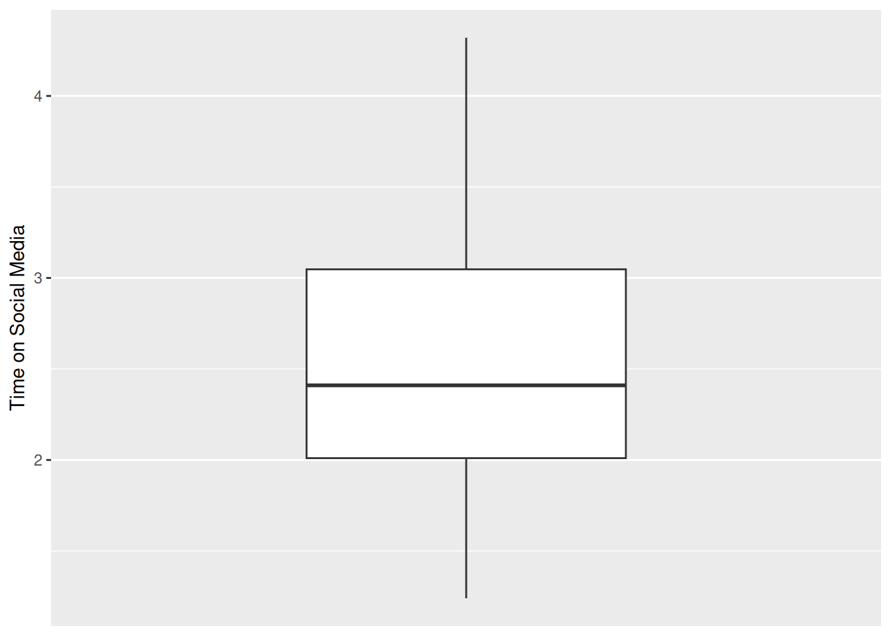

Chapter 2 Data wrangling and visualisation
2.1 Checking installation and loading packages
Before we can begin any script we first need to make sure that the required packages are installed in our version of RStudio. Next, we can load the required packages to be used in the script. The code block below will do this for you.
Note that in the code below, we’ve added a fancy if statement to check if the packages are installed. If they are not installed, it will install them for you. This is a good practice to ensure that your code runs smoothly on any computer without needing to manually install packages. Particularly if you are using the University’s computers, where we have already installed the packages you need (and we ask you not to install any more!).
# Check if packages are installed, if not install.
if(!require(here)) install.packages('here') #checks if a package is installed and installs it if required.
if(!require(tidyverse)) install.packages('tidyverse')
if(!require(ggplot2)) install.packages('ggplot2')
library(here) #loads in the specified package
library(tidyverse)
library(ggplot2)2.2 What do packages do?
You should be able to see that we have installed and loaded 3 different packages. Let’s first go over the basics of what a package is. In its simplest terms, a package is a toolbox that someone has created for us in R that makes our life easier. These packages build on the basic code that comes with the R programming language (what RStudio uses to run), called base R.

Figure 2.1: Opening an R package
2.3 What do these packages do?
It is always a good idea to check the documentation for a package before you use it. We can do this by using the help syntax, which is the ?. The package we are trying to get help with is called here. Try to run this code by clicking on the green arrow on the corner of the code block on the left side of your screen. This will open a webpage that tells us the purpose of the here package and how it works.

Figure 2.2: Running code in R
2.4 Activity 1 - Using help syntax
Fill in the code block below by putting in the help syntax ? and the name of the package you are interested in. This will get the documentation for the other packages we are using. You can do this by substituting in the packages that we are using from above. Have a read of each of these pages and click on any links you find interesting. These are the main packages we will be using throughout this course.
2.5 Organisation and CSV files
The dataset we are using should be downloaded from the tutorial folder on Moodle. On your computer navigate to this folder and have a look at what it contains.
You should note that it contains the following:
- An R Project file called ‘Data_wrangling_and_visualization.Rproj’
- An R Markdown file called ‘Data_wrangling_and_visualization.Rmd’.
- A text file called README.txt’
- A folder called data, containing a .csv file called ‘PSYC2001_social-media-data.csv’
- A folder called output, which is where all your output will go.
- A folder called scripts which is where all new scripts will go.
These are the key ingredients needed to organise all projects in R.

Figure 2.3: Project Organisation
You will notice that the data for today, called PSYC2001_social-media-data.csv, is a csv file (short for a Comma Separated Value file).
csv files are a common and handy way to store data, because they can be read by heaps of different programs, like Excel, Google Sheets, and R. They are simple text files where each line represents a row of data, and the values in each row are separated by commas. Try double clicking on the csv file now to see what happens. You’ll see that Excel offers to open it for you. Click ok to open the file in Excel and take a look at how the data looks. Then say ‘that’s very kind of you Excel, but we are more powerful than you. We R.’

Figure 2.4: Social Media Data in Excel
2.6 Importing your Data in R
We are now going to load our first dataset into R. To do this we will need to import the dataset using a function capable of importing csv files.
We will be using two different functions to achieve this. The read.csv() function is used to import our csv dataset and it comes from the utils package which is part of base R. But the read.csv() function needs to know where the file lives on the computer. To do this, we use the here() function from the here package. This function tells R the location of the project we are working from, to make locating the data easier.
Let’s first confirm that here() knows our current location on this PC (called the ‘Working Directory’)
## [1] "/home/kgarner/Documents/teaching/UNSW-PSYC2001/PSYC2001 Computing Coursebook"We can use this to easily find where our file is located and read it.
Note that this code works because ‘Data’ is a folder in the same directory as the .Rproj file. If the folder Data was somewhere else, then using here() would not work. We would need to instead specify the full path to the file. If you are unsure what we mean by ‘file path’ then please google it, google it now.
Warning: If you have an error, something has gone wrong—please ask your tutor for help!
2.7 Having a look at our imported data
Our data should now be imported into R!
Recall from the README.txt file (make sure you read this) that this dataset was collected as part of an experiment investigating social media use in young Australian adults. Sixty young adults answered questions about their social media usage as well as their political attitudes. Data about their social media usage (e.g., likes) was collected while they used their preferred platforms under various conditions.
The variables in the data are:
id– a unique identifier (S1–S60)age– age in yearstime_on_social– average hours/day on social media (self-report diary)urban– urban (1) or rural (2) area (based on postcode density) -good_mood_likes– likes/10 min during a good mood (from platform + diary)bad_mood_likes– as above, but during bad moodfollowers– average number of followers across platforms
The next 3 columns are political attitude subscales:
informed– how politically informed they feel (e.g., read news daily)campaign– how much they engage in campaign-related discussionactivism– involvement in activism (e.g., protests, petitions)
We should now check that we have imported into Rstudio matches this description (and what we saw when we opened it in excel). There are a couple of ways to do this.
- The first way is to manually click through to the dataset. You can do this by:
- Clicking on Environment in the top right section of your screen.
- Clicking on social_media.
- You should see a new tab pop up with the data in a table-like format (this is called a dataframe).
- Make sure that this new tab looks similar to what you saw when you opened Excel file.

Figure 2.5: Navigating to dataset
- We can also do this programmatically using the code blocks below:
# Method 2 - Use the View function
View(social_media) #view automatically displays the dataset in a tab.# Method 3 - Use the head function
head(social_media) #head displays the first 6 rows of each variable.## id age time_on_social urban good_mood_likes bad_mood_likes followers polit_informed
## 1 S1 15.2 3.06 1 22.8 46.5 173.3 2.3
## 2 S2 16.0 2.18 1 46.0 48.3 144.3 1.6
## 3 S3 16.8 1.92 1 50.8 46.1 76.5 1.9
## 4 S4 15.6 2.61 1 29.9 29.2 171.7 1.6
## 5 S5 17.1 3.24 1 37.1 52.4 109.5 2.0
## 6 S6 15.7 2.44 1 26.9 20.2 157.5 2.4
## polit_campaign polit_activism
## 1 3.2 3.6
## 2 2.2 2.6
## 3 2.7 3.0
## 4 2.3 2.6
## 5 2.9 3.3
## 6 3.4 3.9# Method 4 - Use the str function
str(social_media) #displays an overall summary of the object and variable structure.## 'data.frame': 60 obs. of 10 variables:
## $ id : chr "S1" "S2" "S3" "S4" ...
## $ age : num 15.2 16 16.8 15.6 17.1 15.7 19.7 18.6 19.6 15.5 ...
## $ time_on_social : num 3.06 2.18 1.92 2.61 3.24 2.44 1.46 1.52 1.92 2.1 ...
## $ urban : int 1 1 1 1 1 1 1 1 1 1 ...
## $ good_mood_likes: num 22.8 46 50.8 29.9 37.1 26.9 14.8 26 6.5 45.7 ...
## $ bad_mood_likes : num 46.5 48.3 46.1 29.2 52.4 20.2 35.1 35.8 12.2 32.8 ...
## $ followers : num 173.3 144.3 76.5 171.7 109.5 ...
## $ polit_informed : num 2.3 1.6 1.9 1.6 2 2.4 1.7 1.6 1.5 2.2 ...
## $ polit_campaign : num 3.2 2.2 2.7 2.3 2.9 3.4 2.4 2.2 2.1 3.1 ...
## $ polit_activism : num 3.6 2.6 3 2.6 3.3 3.9 2.7 2.6 2.4 3.5 ...You should now have a good idea of what PSYC2001_social-media.csv looks like in RStudio. This should match what we saw in excel.
You will also notice that the last function, str(), displays a summary of the object. This includes:
- The object type (a dataframe)
- The number of observations/rows (60)
- The number of variables/columns (10)
- The datatype: chr for
id, and num for all other variables
Question: Please discuss with your deskmate and tutor what you think chr and num mean.

Figure 2.6: You thinking
2.8 Checking the quality of our data
Once we have imported our dataset into R, it’s important to check the quality of the data. One simple way to do this is by using the summary() function.
## id age time_on_social urban good_mood_likes
## Length:60 Min. :13.90 Min. :-999.000 Min. :1.0 Min. : 6.50
## Class :character 1st Qu.:15.70 1st Qu.: 1.920 1st Qu.:1.0 1st Qu.:31.60
## Mode :character Median :16.50 Median : 2.365 Median :1.5 Median :45.90
## Mean :16.87 Mean : -30.845 Mean :1.5 Mean :43.04
## 3rd Qu.:17.43 3rd Qu.: 3.042 3rd Qu.:2.0 3rd Qu.:53.40
## Max. :23.00 Max. : 4.320 Max. :2.0 Max. :89.20
## bad_mood_likes followers polit_informed polit_campaign polit_activism
## Min. :12.20 Min. : 61.40 Min. :0.600 Min. :0.800 Min. :0.900
## 1st Qu.:39.08 1st Qu.: 76.47 1st Qu.:1.500 1st Qu.:2.100 1st Qu.:2.400
## Median :49.30 Median :116.30 Median :1.800 Median :2.550 Median :2.900
## Mean :49.84 Mean :124.76 Mean :1.858 Mean :2.602 Mean :2.977
## 3rd Qu.:58.75 3rd Qu.:153.75 3rd Qu.:2.200 3rd Qu.:3.100 3rd Qu.:3.500
## Max. :91.20 Max. :336.50 Max. :3.400 Max. :4.800 Max. :5.500Question: Do you notice anything unusual in the output of this data ? Discuss with your neighbour and tutor.
Hint: Take a closer look at the time_on_social variable.
2.9 Cleaning the data
It should now be clear that this data is unusual because it has a minimum value of -999 in the time_on_social variable which is measured in hours (we can’t have negative time !).

Figure 2.7: Back to the future !
A good question to ask now is - why are these values in the dataset?
Sometimes when collecting data, we can’t get a response from every participant. Instead of leaving a blank, researchers will sometimes put in a placeholder value like -999 to show that the data is missing. These aren’t real numbers; they just mean the data wasn’t recorded. But -999 isn’t the standard way to show missing data in R. R uses NA to represent missing values, and that’s important because most R functions know how to handle NA properly but they don’t know to ignore -999.
Lets first have a look at how many -999 values are present in the data. We can do this by using the filter() function from the tidyverse package which is used to keep (or remove) rows based on certain conditions.
social_media_filtered <- filter(social_media, time_on_social == -999) #keep all rows where `time_on_social` is equal to -999
View(social_media_filtered) #view the filtered dataframeHandily, we can then use the count() function from the tidyverse package to sum the number of rows in the resulting dataframe.
## n
## 1 22.10 Introducing Piping
A short aside to introduce a very specical operation called a ‘pipe’ or %>%. This operation is part of the tidyverse package and allows you to pass the result from one function to the next seamlessly in a sort of assembly-line like fashion. Throughout the rest of the course we will be using ‘piping’ as it is easier to follow and code. For instance, lets repeat what we just did above but with pipes instead.
social_media %>% #pass the values from social_media to the filter function
filter(time_on_social == -999) %>% #keep all rows that are equal to -999 and pass the result to count
count() #count the number of remaining columns## n
## 1 2Info: Piping is not friends with every function. Some functions will not accept inputs from pipes (no matter how nice they are !). This will become clearer as we code throughout this course.
Now lets use a piping method to clean this data up by replacing -999 values with more R readable NA values. NA stands for ‘Not Available’ and is the standard way to represent missing data in R. We can do this using the mutate() and na_if() functions from the tidyverse package. The mutate() function is used to alter or make new columns in a dataframe based on the conditions we specify and na_if() is used to replace given values with NA in a dataframe.
2.11 Exporting Data
It would be a good idea to save this dataset for future tutorials, so that we don’t have to replace -999 values with NA values every single time.
We can do this with the write.csv() function from baseR. This function takes a dataframe in R and saves it as a .csv file on your computer. Later, we can simply read that csv back into R, and it will already be cleaned.
2.12 Data visualization using ggplot2
Visualizing data is a crucial step in data analysis. You should never run a statistical analysis without first visualising your data. It helps us understand the distribution of our data, identify patterns, and communicate our findings effectively. It also helps us identify whether the data is suitable for the analysis we want to perform, or whether some weird values remain that could influence the result of our statistical tests, and even worse, our interpretations!
So, let’s look at some data! We’re going to start by visualising the time_on_social variable.
To do this we will need to use the ggplot() function. This is the main function from the ggplot2 package (you should know what this is from reading the documentation). ggplot() provides the canvas of the graph you want to make.
To make the basic canvas ggplot() requires two things:
The data that you want it to plot.
The variables to go on the x and y axes.
Importantly, ggplot() only provides the canvas. It does not draw anything by itself. You have to add layers to the canvas created by ggplot() by using other functions that can create bars, points or lines !
Here we use geom_boxplot() which creates a boxplot for us. What is a boxplot you ask ? A boxplot is a graph that shows the spread of data points where the lower part of the “box” represents the bottom quartile (where 25% of the data lies), the upper part of the box represents the upper quartile (where 75% of the data lies) and the middle of the box represents the median (the middle value). The “whiskers” (vertical lines) extend to the smallest and largest values not considered outliters.
social_media_NA %>%
ggplot(aes(y = time_on_social),) + #ggplot uses aesthetic (aes()) to map axes.
scale_x_discrete() + #this tells ggplot that the x-axis is categorical.
geom_boxplot() + #creates a boxplot
labs(y = "Time on Social Media") #short for "labels", use to label axes and titles.## Warning: Removed 2 rows containing non-finite values (`stat_boxplot()`).
Warning: We receive a warning here because ggplot() is able to recognise and remove ‘NA’ values. Be careful as not all R functions are able to do this.
Question: What approximately is the median value? The lower quartile? The upper quartile? Is there another way that we could get this information in a more exact form ? Discuss this with your deskmate and your tutor.
2.13 Activity 2 - Creating a histogram in ggplot()
ggplot() can be customised with so many other functions that we have shown here to make truly beautiful looking plots. We will be learning how to do this throughout the next few weeks.
For now lets see if you can put some of the skills you have learned so far to good use. See if you can work out how to make a histogram of the data using the function geom_histogram()
Hint: You will only need to provide an x variable this time !
social_media_NA %>%
ggplot(aes(x = time_on_social)) + #ggplot uses aesthetic (aes()) to map axes.
geom_histogram() + #creates a histogram
labs(x = "Time on social media", y = "Density") #short for "labels", use to label axes and titles.Question: What conclusions would you draw about the shape of the data, given your histogram? Please discuss with your deskmate and tutor.